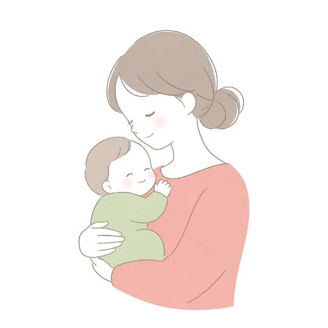

出産費用の無償化にそなえる、京都府の産院えらび
ふつうのお産は、保険で。
これからは「じぶん払い」で
産院をえらぶ時代へ。
2028年6月ごろまでに、ふつうのお産の費用は、国の保険でまかなわれる予定です。産院ごとにちがいが出るのは、個室やお祝い膳、無痛分娩など、じぶんで払うところ。さんいん手帖は、それを京都府の産院ごとにならべて、くらべられるサイトです。

46か所さんいん手帖で調べた、京都府内でお産ができる産院・助産所
差額なし〜1日17,000円個室の追加料金（金額を公開している産院）
7万〜15万円無痛分娩の追加料金（金額を公開している産院）
無償化で、なにが変わるの？
2026年5月に法律が決まりました。ふつうのお産には全国おなじ金額がきめられ、その分は保険から払われる予定です。
国（保険）が払う部分
ふつうのお産そのもの
- 正常分娩の費用は、全国おなじ金額に
- お母様の持ち出しを、おさえるしくみになる予定
- すべての妊婦さんに、じゅんび用のお金（定額）も出る予定
じぶんで払う部分
産院ごとにちがうところ
- 個室やランクの高いお部屋
- お祝い膳などのサービス
- 無痛分娩など（くわしくはこれから決まります）
- 帝王切開は、いまと同じく原則3割
まだ決まっていないこと
これから発表されます
- 全国一律の金額がいくらになるか
- 産院ごとに、いつから新しいしくみになるか
- 決まりしだい、このサイトを書きかえます
くらべるのは、この5つ
無償化のあとは、ここで差がつきます。どれを大切にするかは、ご家族しだいです。
お部屋大部屋・個室・特別室。1日いくら？
お食事お祝い膳はある？ ふだんの食事は？
無痛分娩できる？ 24時間？ いくら足される？
ご家族立ち会い、上のお子様の面会、泊まり
産後ケア退院後に泊まれる？ 1泊いくら？
エリアでさがす
京都府ぜんたいの、お産ができる産院・助産所をのせています。
知っておきたいこと
2026年11月11日
出産費用の無償化はいつから？京都のお母様が知っておきたい最新情報（2026年11月）
2026年11月2日産院の見学・健診で聞いておきたい「じぶん払い」チェックリスト
2026年11月2日京都市の産後ケア（スマイルママ・ホッと事業）の使い方と料金
2026年11月2日京都府の産後ケア｜市町村ごとの料金と使い方（2026年11月）
2026年11月11日出産育児一時金（50万円）と直接支払制度・受取代理制度
2026年11月11日帝王切開・トラブルのあるお産の費用と、つかえる制度
2026年11月11日京都府の妊婦健診の助成：京都市とほかの市町のちがい
2026年11月11日里帰り出産の進め方（京都に帰る・京都から帰る）
2026年11月11日妊娠・出産でもらえる国と京都の給付金のまとめ
2026年11月11日産院のえらび方｜大きな病院・産婦人科クリニック・助産所のちがい
2026年11月11日産院えらびのことば集｜LDR・母子同室・計画分娩などをやさしく解説
2026年11月11日分娩予約はいつまで？｜京都府の産院の予約の時期としめ切り（2026年11月）
2026年11月11日京都府の助産所（助産院）でのお産｜できること・できないことと費用のめやす
2026年11月11日立ち会い出産と面会のルール｜京都府の産院まとめ（2026年11月）
2026年11月11日無償化と産院えらび よくある質問15｜個室・無痛分娩・いま妊娠中の方は？
2026年11月11日京都府の産院の出産費用（総額）一覧｜地域ごと・出産なびの実績から（2026年11月）
2026年11月2日京都府で無痛分娩ができる産院と追加料金（2026年11月）
2026年11月11日京都府の産院の個室代（1日あたりの追加料金）まとめ｜無償化のあとはじぶんで払う部分（2026年11月）
2026年11月11日京都府の産院のお祝い膳まとめ｜追加料金はかかる？（2026年11月）
2026年11月2日京都府でお産ができる場所が減っています｜お産をやめた病院と、施設がない市町村（2026年）
出産までに、そろえるもの
さんいん手帖の4つのやくそく
- ランキングはつけませんどの産院がいいかは、ご家族ごとにちがうからです。
- 口コミ・体験談はのせませんのせるのは、金額とサービスの「事実」だけです。
- 情報の出どころと、調べた日をかきます金額が変わることがあるので、行く前に産院へご確認ください。
- お金をいただいたものには「広告」「PR」とかきますふつうの情報と、まざらないようにします。
よくある質問
いつから無料になりますか？
2028年6月ごろまでに始まる予定です。じゅんびのできた産院から順番に新しいしくみになるので、産院ごとに時期がちがうことがあります。
帝王切開も無料ですか？
帝王切開は、いまと同じく保険で原則3割の負担になる予定です。くわしくは、決まりしだいお知らせします。
出産育児一時金（50万円）はどうなりますか？
産院の判断で、しばらくは今のしくみが続くこともあると発表されています。お使いになる産院でご確認ください。
のっている「いまの総額」は、無償化のあとも同じですか？
いいえ。いまの総額は、国の「出産なび」の2025年4〜9月の実績です。無償化のあとは、ふつうのお産の分は保険になり、じぶんで払うのは個室などの分になる予定です。
「産院に確認」と出るのはなぜ？
産院が金額を公開していない項目です。さんいん手帖では、産院に問い合わせて、わかりしだい書きくわえていきます。
産院・病院のみなさまへ
個室やお祝い膳、産後ケアなどの料金を、まちがいなくのせたいと考えています。料金表の確認や、情報の直しは、お問い合わせからご連絡ください。（現在、掲載は無料です）